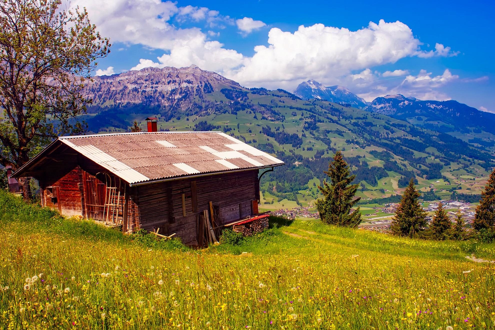

10.1 Introducción a los efectos de las imágenes
En muchas ocasiones cuando un desarrollador o diseñador web lleva a cabo la maquetación de un proyecto, necesita aplicar determinados efectos en algunas imágenes. Vamos a mostrar unos filtros para aplicar los efectos más populares usando únicamente código CSS.
Antes de empezar, hay que tener en cuenta que algunos de estos filtros solo son compatibles con los navegadores Google Chrome y Safari, aunque se prevé que en futuras versiones de los otros navegadores más usados la compatibilidad con los filtros mejorará. De momento es posible aplicar estos filtros en otros navegadores usando SVG.
En este caso, vamos a usar esta imagen:
10.2 OCHO Efectos que debes de conocer
A continuación, te voy a enseñar 8 efectos de CSS para modificar la imagen anterior.
#1 Efecto de desenfoque:
Tendremos que indicar un número de píxeles, proporcional a la intensidad del efecto.
#2 Escala de grises:
indicaremos el porcentaje de decoloración.
#3 Invertir:
Invierte el color, la saturación y el brillo. Indicaremos el porcentaje de aplicación.
#4 Tono sepia
indicaremos un porcentaje de aplicación del típico efecto “vintage”.
#5 Rotando el color:
¿te imaginabas poder rotar el color de la imagen unos cuantos grados? Pues sí se puede, indicando los grados a rotar.
#6 Brillo:
Indicaremos el porcentaje de brillo que queramos darle a la imagen.
#7 Contraste:
igual que en el caso anterior, indicaremos el porcentaje de contraste que nos interese.
#8 Saturación:
Este es un efecto bastante popular que sirve para incrementar la saturación de color en imágenes subexpuestas. Indicaremos un porcentaje.